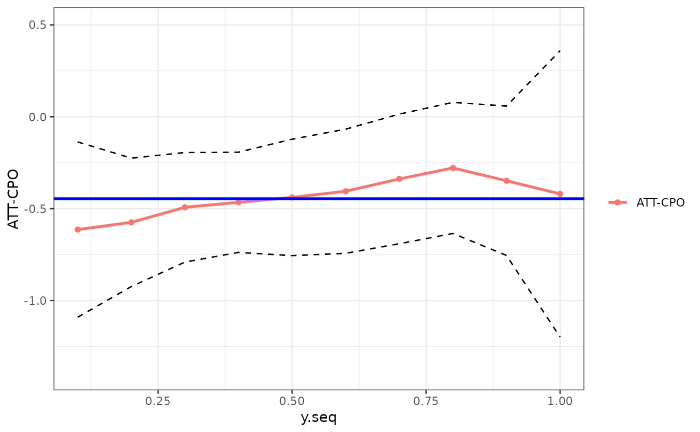

compute the Average Treatment Effect on the Treated Conditional on the previous outcome (ATT-CPO)
attcpo(formla, t, tmin1, tmin2, tname, data, idname, Y0tqteobj, h = NULL, yseq = NULL, yseqlen = 100, se = TRUE, iters = 100, method = "level")
| formla | e.g. y ~ treat |
|---|---|
| t | the last time period |
| tmin1 | the middle time period |
| tmin2 | the first time period |
| tname | the name of the column containing time periods in the data |
| data | a data.frame |
| idname | the name of the column containing an individual identifier over time |
| Y0tqteobj | a qte object (from the qte package) containing the the counterfactual distribution of untreated potential outcomes for the treated group |
| h | optional bandwidth |
| yseq | optional sequence of y values, default is to use all unique yvalues in the data, though this can increase computation time |
| yseqlen | optional length of y values to use, aids in automatically generating yseq if desired |
| se | whether or not to compute standard errors |
| iters | how many bootstrap iterations to use if computing standard errors; default is 100. |
| method | should be either "levels" or "rank"; whether to compute the ATT-CPO using based on the levels of Y0tmin1 or the ranks of Y0tmin1; "levels" is the default. |
att-cpo
data(displacements) cc <- qte::CiC(learn ~ treat, t=2011, tmin1=2007, tname="year", idname="id", panel=TRUE, data=displacements, probs=seq(.05,.95,.01),se=FALSE) cc$F.treated.tmin1 <- ecdf(subset(displacements, year==2007 & treat==1)$learn) cc$F.treated.tmin2 <- ecdf(subset(displacements, year==2003 & treat==1)$learn) ac <- attcpo(learn ~ treat, 2011, 2007, 2003, "year", displacements, "id", cc, method="rank", yseqlen=10)#> NULLac#> $y.seq #> [1] 0.1 0.2 0.3 0.4 0.5 0.6 0.7 0.8 0.9 1.0 #> #> $attcpo #> [1] -0.6835593 -0.6333717 -0.4953571 -0.5434082 -0.5009096 -0.5121936 #> [7] -0.5233898 -0.3051418 -0.3753264 -0.3860517 #> #> $ey1 #> [1] 9.891107 10.141758 10.313033 10.038755 10.271370 10.479059 10.181614 #> [8] 10.338104 10.329018 10.286022 #> #> $ey0 #> [1] 10.57467 10.77513 10.80839 10.58216 10.77228 10.99125 10.70500 10.64325 #> [9] 10.70434 10.67207 #> #> $attcpo.se #> [1] 0.2472857 0.2365352 0.2367236 0.2488047 0.2372855 0.2545667 0.2635582 #> [8] 0.2413307 0.2111859 0.5474112 #> #> $V #> [,1] [,2] [,3] [,4] [,5] #> [1,] 0.061150196 0.013691683 -0.0078115269 -0.010293748 -0.006207300 #> [2,] 0.013691683 0.055948916 0.0203708810 -0.008339365 -0.006781127 #> [3,] -0.007811527 0.020370881 0.0560380651 0.022828297 -0.008924198 #> [4,] -0.010293748 -0.008339365 0.0228282966 0.061903761 0.020006774 #> [5,] -0.006207300 -0.006781127 -0.0089241978 0.020006774 0.056304385 #> [6,] 0.001094545 -0.014841326 -0.0108237488 -0.004176368 0.024016156 #> [7,] -0.001628499 -0.014502475 -0.0103037078 -0.005603992 0.005412592 #> [8,] -0.003169239 0.008855558 0.0009571953 -0.004101625 0.001992979 #> [9,] -0.005959900 0.008368837 0.0014043846 0.001826049 -0.003430222 #> [10,] 0.024222087 -0.009234414 -0.0199745819 0.021514911 0.008035504 #> [,6] [,7] [,8] [,9] [,10] #> [1,] 0.0010945446 -0.001628499 -0.0031692393 -0.005959900 0.0242220868 #> [2,] -0.0148413256 -0.014502475 0.0088555580 0.008368837 -0.0092344139 #> [3,] -0.0108237488 -0.010303708 0.0009571953 0.001404385 -0.0199745819 #> [4,] -0.0041763682 -0.005603992 -0.0041016255 0.001826049 0.0215149110 #> [5,] 0.0240161557 0.005412592 0.0019929789 -0.003430222 0.0080355040 #> [6,] 0.0648042046 0.035951229 -0.0042102337 -0.014101477 -0.0006141953 #> [7,] 0.0359512288 0.069462912 0.0245734236 -0.009209428 -0.0127635809 #> [8,] -0.0042102337 0.024573424 0.0582404872 0.018586620 -0.0142212215 #> [9,] -0.0141014767 -0.009209428 0.0185866205 0.044599476 0.0017980978 #> [10,] -0.0006141953 -0.012763581 -0.0142212215 0.001798098 0.2996590063 #> #> $Y0tqteobj #> $qte #> 5% 6% 7% 8% 9% 10% 11% #> -1.5006187 -1.5569400 -1.0986123 -1.0885705 -1.1335352 -1.0441879 -0.9353390 #> 12% 13% 14% 15% 16% 17% 18% #> -0.7991896 -0.7852097 -0.7008364 -0.7214619 -0.7339692 -0.7656713 -0.7493390 #> 19% 20% 21% 22% 23% 24% 25% #> -0.6567795 -0.6291824 -0.6092436 -0.5571908 -0.5107200 -0.5263566 -0.5108256 #> 26% 27% 28% 29% 30% 31% 32% #> -0.4403159 -0.4801583 -0.5078361 -0.4925044 -0.4643056 -0.4234100 -0.4198538 #> 33% 34% 35% 36% 37% 38% 39% #> -0.3751321 -0.3606992 -0.3943260 -0.3881538 -0.3624938 -0.3566749 -0.3566749 #> 40% 41% 42% 43% 44% 45% 46% #> -0.3014806 -0.2876821 -0.2876821 -0.2726321 -0.2536122 -0.2594272 -0.2799341 #> 47% 48% 49% 50% 51% 52% 53% #> -0.2954642 -0.2954642 -0.2745395 -0.2463344 -0.2464763 -0.2306394 -0.2483930 #> 54% 55% 56% 57% 58% 59% 60% #> -0.2513144 -0.2344119 -0.2713045 -0.3877793 -0.3410228 -0.3184537 -0.3184537 #> 61% 62% 63% 64% 65% 66% 67% #> -0.3184537 -0.3184537 -0.3184537 -0.3066013 -0.2744831 -0.2668399 -0.2360177 #> 68% 69% 70% 71% 72% 73% 74% #> -0.2060642 -0.2188869 -0.2363888 -0.2410052 -0.2789453 -0.2194129 -0.1920685 #> 75% 76% 77% 78% 79% 80% 81% #> -0.1823216 -0.1321311 -0.1342285 -0.1278334 -0.1242763 -0.1467582 -0.1538018 #> 82% 83% 84% 85% 86% 87% 88% #> -0.1114163 -0.1770465 -0.2240847 -0.2076394 -0.2076394 -0.2102987 -0.2006002 #> 89% 90% 91% 92% 93% 94% 95% #> -0.1763654 -0.1641429 -0.1579498 -0.1328355 -0.1344619 -0.1580955 -0.2130494 #> #> $ate #> [1] -0.4723069 #> #> $qte.se #> NULL #> #> $qte.lower #> NULL #> #> $qte.upper #> NULL #> #> $ate.se #> NULL #> #> $ate.lower #> NULL #> #> $ate.upper #> NULL #> #> $pscore.reg #> NULL #> #> $probs #> [1] 0.05 0.06 0.07 0.08 0.09 0.10 0.11 0.12 0.13 0.14 0.15 0.16 0.17 0.18 0.19 #> [16] 0.20 0.21 0.22 0.23 0.24 0.25 0.26 0.27 0.28 0.29 0.30 0.31 0.32 0.33 0.34 #> [31] 0.35 0.36 0.37 0.38 0.39 0.40 0.41 0.42 0.43 0.44 0.45 0.46 0.47 0.48 0.49 #> [46] 0.50 0.51 0.52 0.53 0.54 0.55 0.56 0.57 0.58 0.59 0.60 0.61 0.62 0.63 0.64 #> [61] 0.65 0.66 0.67 0.68 0.69 0.70 0.71 0.72 0.73 0.74 0.75 0.76 0.77 0.78 0.79 #> [76] 0.80 0.81 0.82 0.83 0.84 0.85 0.86 0.87 0.88 0.89 0.90 0.91 0.92 0.93 0.94 #> [91] 0.95 #> #> $type #> [1] "On the Treated" #> #> $F.treated.t #> Empirical CDF #> Call: ecdf(treated.t[, yname]) #> x[1:80] = 7.0031, 7.2442, 7.6009, ..., 12.044, 12.748 #> #> $F.untreated.t #> NULL #> #> $F.treated.t.cf #> Empirical CDF #> Call: NULL #> x[1:80] = 7.0031, 7.2442, 7.6009, ..., 12.044, 12.748 #> #> $F.treated.tmin1 #> Empirical CDF #> Call: ecdf(subset(displacements, year == 2007 & treat == 1)$learn) #> x[1:78] = 8.6482, 9.2103, 9.6158, ..., 11.849, 12.637 #> #> $F.treated.tmin2 #> Empirical CDF #> Call: ecdf(subset(displacements, year == 2003 & treat == 1)$learn) #> x[1:74] = 8.2266, 8.8537, 8.9872, ..., 11.791, 12.491 #> #> $F.treated.change.tmin1 #> NULL #> #> $F.untreated.change.t #> NULL #> #> $F.untreated.change.tmin1 #> NULL #> #> $F.untreated.tmin1 #> NULL #> #> $F.untreated.tmin2 #> NULL #> #> $condQ.treated.t #> NULL #> #> $condQ.treated.t.cf #> NULL #> #> $eachIterList #> NULL #> #> $inffunct #> NULL #> #> $inffuncu #> NULL #> #> attr(,"class") #> [1] "QTE" #> #> attr(,"class") #> [1] "ATTCPO.OBJ"ggattcpo(ac)